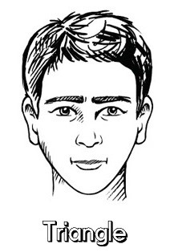

Heart Face Features
Heart faces have less balanced proportions. They are about as wide as they are long and have a tapering jaw with the widest part being their forehead then cheekbones.

Best Sunglasses Styles
Most styles work aslong as the frame is not very large
Why They Suit Heart Faces
Smaller Glass shapes suit best as they take attention away from the faces less wide lower third, looking disproportionate.